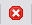

Add latest template revision wizard
The Add latest template revision wizard allows the user to update an existing component that is part of a consumed template, with the latest revision of the same component from the local or from a remote Content Repository.
|
Only users with the Architect functional role as part of their security profile can consume the latest revision of the component template. |
A template is used to create generic content that can be reused in a solution, speeding up the solution build process. Once a template has been consumed, any template tracking information (information that links the template to the repository which was used to create it) can be viewed using the Consumed Templates window. For more information about templates, refer to the Content Management overview topic.
The Add latest template revision wizard consists of one step. It displays information about the component template that will be consumed. It also allows the user to determine how mismatched conflicts will be resolved between the component template and the referenced component in the solution.
This screen consists of the following areas:
Configuration name - displays the configuration name from the previously consumed component template
Use Original Template Structure - not available
Select Precedence - allows the user to select a single resolution to assign to all conflicts:
- Unresolved - set all the component templates to unresolved
- Template - the referenced component (local) will be overwritten by the component template
- Template (Rename) - the component template will be consumed into the same location as the referenced component but it will be renamed (assigned a suffix (<number>) - for example, Applicants (1))
- Local - the referenced component (local) will be used instead of the component template.
Apply - allows the user to apply the selected precedence set in the Select Precedence: drop down list to all the conflicts
Template Structure - displays the component template in a hierarchical tree structure. The root component being imported will be displayed in bold.
Merge Status - displays the state of the component template compared to the referenced component in the solution
- Merged - the component template has been modified and therefore the changes will be merged into the referenced component

Conflict - there are some conflicts between the component template and referenced component- N/A - there have been no changes in the component template and therefore the referenced component will be used.
Notes - indicates if a component template has a note attached
- Bold Notes icon - this component has an attached note. Its content can be viewed in the Notes area below the table columns (or using the tooltip)
- Grey Notes icon - there is no note attached to this component
Conflicts Precedence - displays the conflict precedence option set for each impacted component templates. The user can choose how the conflict should be resolved for the selected component using an option from the Select Precedence: drop down list.
- Unresolved - set the component template to unresolved
- Template - the referenced component will be overwritten by the component template
- Template (Rename) - the component template will be consumed into the same location as the referenced component but it will be renamed (assigned a suffix (<number>) - for example, Applicants (1))
- Local - the referenced component (local) will be used instead of the component template
- Local to recycle bin - the referenced component will be used but it will be moved into the solution Recycle Bin
- Resolve later - the component template will be consumed and the referenced component will be renamed (assigned a suffix - conflict (mine) - for example, LDS - conflict (mine)). This option allows the user to compare or merge the components at a later time.
Valid - displays the state of the component template compared to the referenced component in the solution
- Valid icon - there is no conflict with this component and the underlying folder structure is valid
- Warning icon - there is a warning for this component but it can still be consumed in the solution
- Error icon - there is an error with this component which must be resolved before it can be consumed into the solution.
Folder Action- displays whether a folder will be created or modified by the Add from template process
- New folder icon - a new folder will be created in the target location with the appropriate allowed component types and publishing rules
- Modified folder icon - either the allowed component types, publishing rules or both will be modified in the target location.
Target - displays the target location where the template will be consumed
 Ellipsis - opens the Map <component name> to Existing Folder dialog. This dialog allows the user to customise the target location for a new component template. This button will be displayed when the Use Original Template Structure checkbox in the Original Template Structure area is unchecked.
Ellipsis - opens the Map <component name> to Existing Folder dialog. This dialog allows the user to customise the target location for a new component template. This button will be displayed when the Use Original Template Structure checkbox in the Original Template Structure area is unchecked.

{kind=link}
{kind=link}
{kind=link}
{kind=link}
{kind=link}
{kind=link}
{kind=link}
{kind=link}
 Change Visible Columns - opens the Change Visible Columns dialog.
Change Visible Columns - opens the Change Visible Columns dialog.
{kind=link}
This dialog allows the user to choose which column(s) to show or hide. The user can also right click on any column header to display the Change Visible Columns dialog.
The Notes area displays the content of the note that is attached to the selected component template.
When the user clicks Finish, the process is sent to the Job Submission Console, ready for execution.